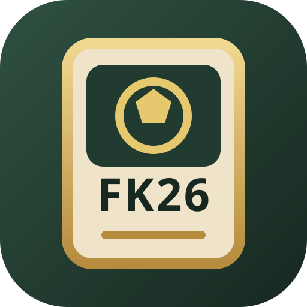

Fociskártyák 2026
Nyisd meg telefonon a teljes NB I-es kártyajátékot. A játék böngészőből fut, és a kezdőképernyőre is telepíthető.
A Fociskártyák 2026 független projekt. Nem áll hivatalos kapcsolatban a játékban megjelenített klubokkal, ligákkal vagy sportszövetségekkel.
Telepítés Androidon
- Nyisd meg a Játék indítása gombbal.
- A Chrome menüjében válaszd az Alkalmazás telepítése vagy a Hozzáadás a kezdőképernyőhöz lehetőséget.
- Ezután saját ikonnal, teljes képernyőn indítható.
Telepítés iPhone-on
- Nyisd meg a játékot Safariban.
- Koppints a Megosztás ikonra.
- Válaszd a Főképernyőhöz adás lehetőséget.
Megnyitás másik telefonon
Olvasd be a telefon kamerájával.
https://lovaszcsabamate-star.github.io/Focisk-rty-k2026/